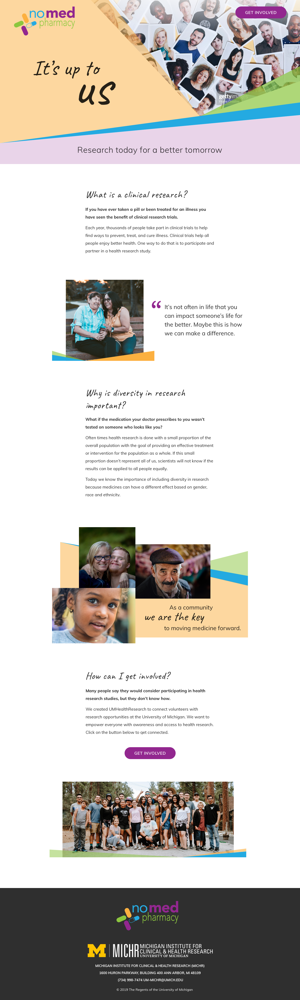

No Med Pharmacy Landing Page
Background
The No Med Pharmacy was an in-person booth event that featured pharmacy shelves with no medicine, demonstrating what would happen if no people were to participate in research studies. This landing page would accompany the booth as the take-away for people who became interested in learning more after the event.
The design needed to be warm and welcoming, yet official. It also needed to emphasize diversity to reflect the need of diverse participants in the research process.
I created two variations of a design. The final site used elements from both variations.
Variation 1
Variation 2